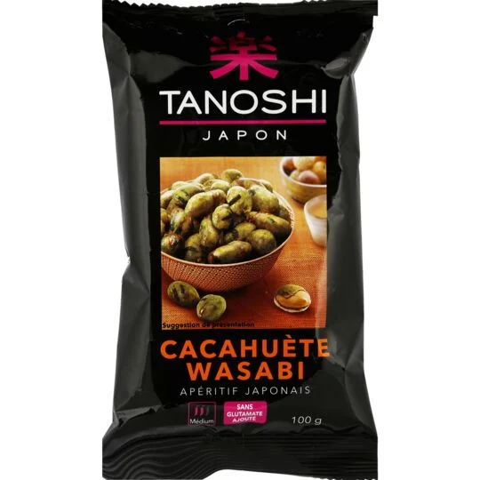

Les cacahuètes au wasabi Golden Turtle sont des cacahuètes enrobées de wasabi. Le wasabi est issu de la racine d’une plante semi-aquatique, ayant un goût assez proche de la moutarde ou du raifort. Il est principalement consommé au Japon."(déscription officiel des cacahuetes au wasabi Golden Turtle)
"Si vous n'êtes pas seulement impressionné.e par le wasabi en combinaison avec des sushis, alors faites attention : nos cacahuètes au wasabi sont un must pour tous les amateur.ices de collations croustillantes et épicées. Les cacahuètes vertes au wasabi ne sont pas seulement un atout visuel. La netteté ardente et la saveur intense du wasabi sont complétées par la cacahuète croquante au cœur - et font des petites boules une véritable explosion de goût ! Les cacahuètes vous aident à satisfaire les petites faims. Elles sont idéales pour grignoter entre les repas, ainsi que pour partager entre amis ou en famille. Quelle chance que vous puissiez acheter les délicieuses cacahuètes au wasabi directement chez nous dans le pack de grande valeur." (description officiel des cacahuètes au wasabi KoRo
"Pour un apéritif typique japonais, les cacahuètes wasabi apporteront une touche d’originalité à vos soirées en amenant un fin goût piquant pour raviver les papilles." (déscription officiel des cacahuetes au wasabi Tanoshi)
mais pour ce procurer les (objectivement) meilleur cacahuètes au wasabi au monde. Il faut regarder dans
le marcher de la ville de Digne Les Bains qui se déroule le mercredi et le samedi matin. Là bas, vous
pourez y trouver les cacahuètes au wasabi (objectivement) les plus goûtues, les plus croustillentes,
les pls transandante, les plus exquises. On raconte même que les manger pourrait faire revenir ton
père parti acheter du lait il y a 20 ans.
En bref, les meilleur cacahuètes au wasabi se trouve au
marché de Digne Les Bains. (et on dit pas sa par se que c'est les seuls qu'on a eu la chance de gouter)